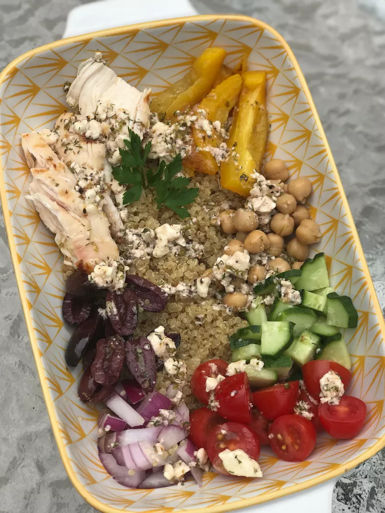

Greek Chicken Quinoa Bowl

Description
The grilled chicken quinoa bowl is a powerhouse meal perfect for rugby players
Ingridents
Chicken Marinade:
- 3 (5.3 ounce) containers Greek yogurt
- 1 tablespoon dried oregano
- ½ lemon, juiced
- ½ teaspoon ground black pepper
- ½ teaspoon granulated garlic
- 2 pounds chicken breasts
Quinoa:
- 2 cups chicken broth
- 1 cup quinoa
- 2 cloves garlic, minced
Bowl:
- 3 small cucumbers, quartered and chopped
- 2 roasted red peppers, drained and sliced
- 1 pint grape tomatoes, halved
- 1 ¼ cups Kalamata olives, sliced
- 1 (15 ounce) can chickpeas, drained and rinsed
Directions
- Mix Greek yogurt, oregano, lemon juice, black pepper, and granulated garlic
together in a large bowl. Add chicken and coat with yogurt mixture. Cover and refrigerate;
let marinate 1 1/2 hours.
- Combine chicken broth, quinoa, and garlic in a small saucepan and bring to a boil. Cover and reduce heat to
low. Simmer until quinoa is tender and water is absorbed, about 20 minutes
- Set oven rack about 6 inches from the heat source and preheat the oven's broiler. Line a baking sheet with aluminum foil.
Place peppers with cut sides down onto the prepared baking sheet.
- Cook under the preheated broiler until the skin of the peppers has blackened and blistered, 5 to 8 minutes.
Let peppers cool for a few minutes before slicing and placing in a bowl.
- Place tomatoes, chickpeas, olives, and onion each into a separate bowl.
- Preheat an outdoor grill for medium heat and lightly oil the grate.
- Combine olive oil, vinegar, feta cheese, lemon juice, black pepper, oregano, dill,
and granulated garlic in a bowl. Whisk dressing, making sure to break up feta cheese
- Grill chicken until no longer pink in the center and the juices run clear, 8 to 12 minutes. An instant-read thermometer inserted into the center should
read at least 165 degrees F (74 degrees C). Remove from heat and let rest about 10 minutes.
- Assemble 6 bowls by spooning quinoa into the bottom. Add cucumbers, roasted peppers,
tomatoes, olives, chickpeas, and red onions around the perimeter of the bowl. Add chicken.
- Whisk dressing really well and spoon equally over bowls.
Home